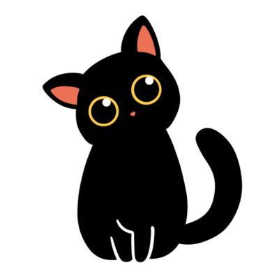

Gatinhos tigrados são lindos mas os pretinho são adoráveis.
Gatinhos pretinhos iguais a Nami são adoráveis.
Gatos pretos, apesar da crença popular ligada à má sorte, são na verdade símbolos de boa sorte em algumas culturas e têm características genéticas fascinantes, como o melanismo, que lhes confere a cor e até maior resistência a doenças. Embora sejam confundidos com raças, "gato preto" é um padrão de pelagem com 22 raças existentes, como o Bombaim. Eles são inteligentes, carinhosos e têm um dia próprio, 27 de outubro, para combater o preconceito e celebrar sua beleza.
MUSICA MEDIEVAL>